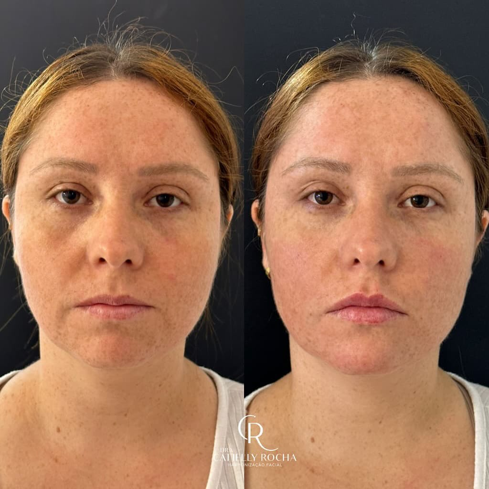
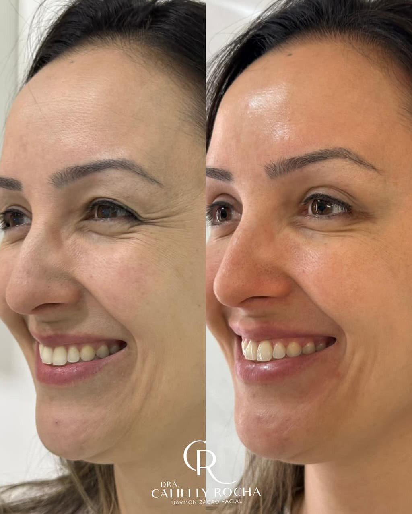
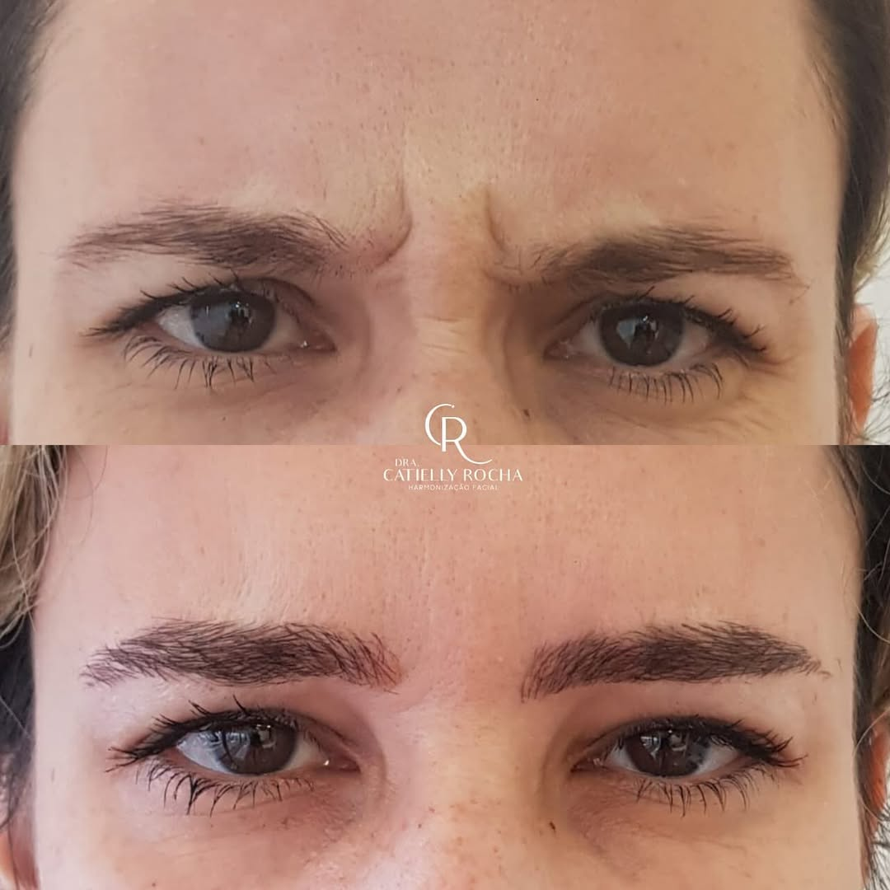
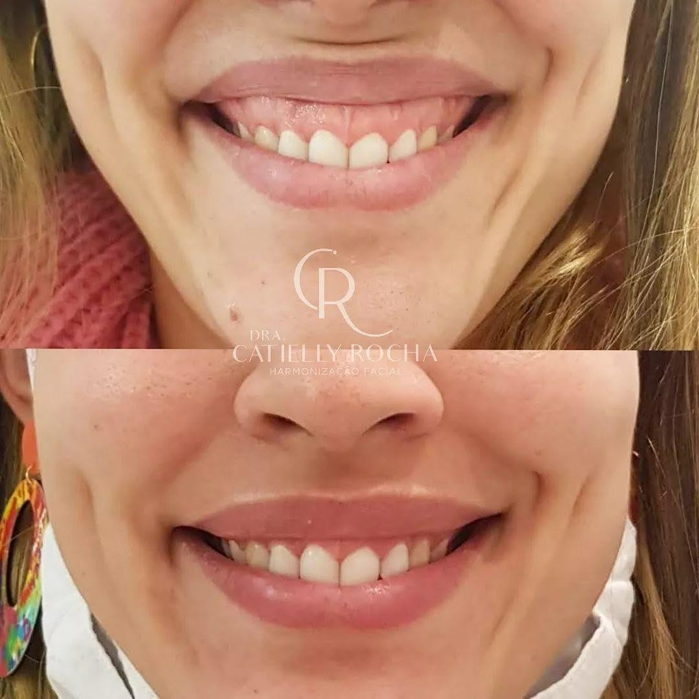
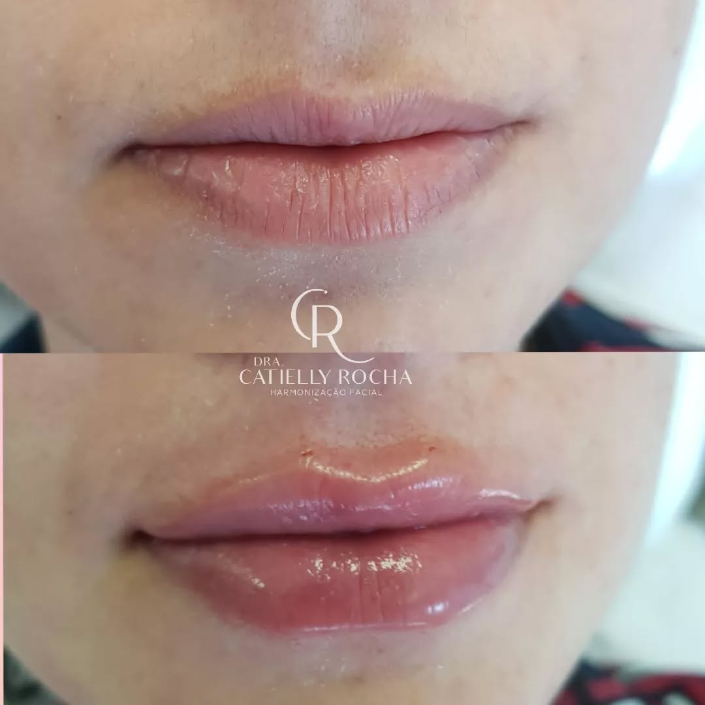
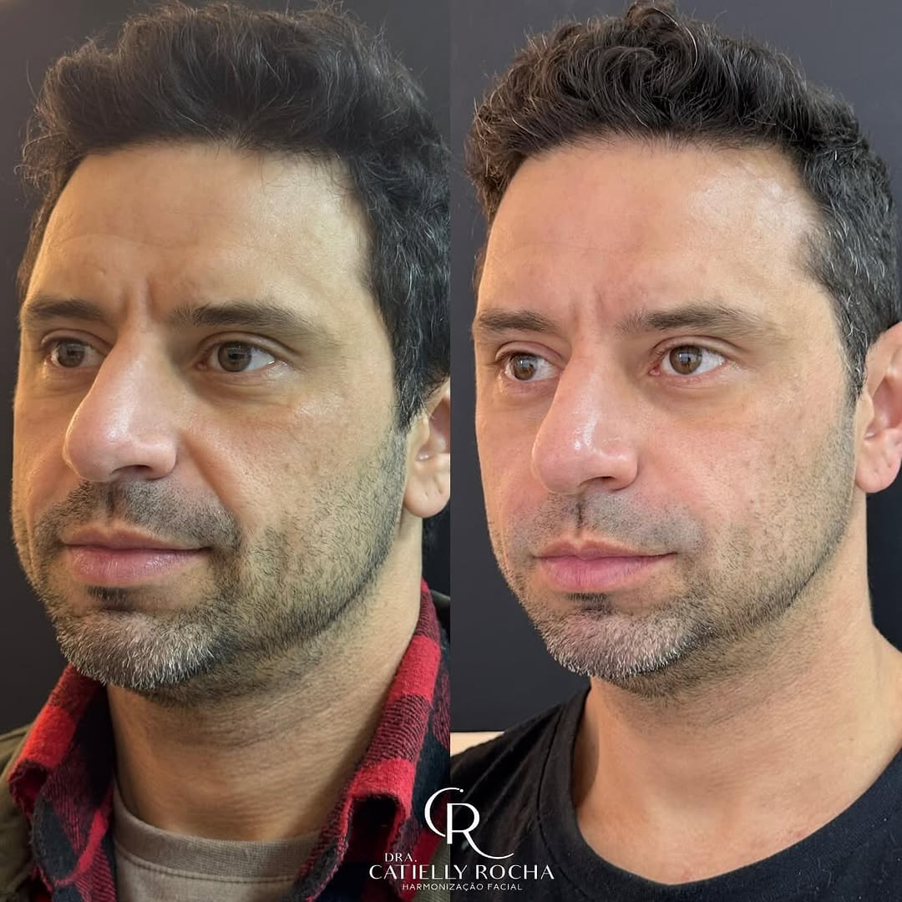

Dra. Catielly
Rocha
inspire-se a se sentir bem na sua pele
Harmonização facial, Botox e preenchimento com técnica apurada e um olhar clínico que explica cada etapa antes de agir. Atendimento no Jardim São Dimas.

- SJCJardim São Dimas
- 4,9 mil+Seguidores
- 287Posts com resultados reais
Uma biomédica esteta que explica antes de agir
A Dra. Catielly Rocha é biomédica especializada em estética avançada, à frente da Clínica Inspire em São José dos Campos. Seu trabalho concentra-se em harmonização facial, toxina botulínica e preenchimento com ácido hialurônico, sempre buscando resultados que respeitem a expressão natural do rosto.
Entre quem avalia o atendimento publicamente, um ponto se repete: a atenção ao detalhe. Cada etapa é explicada antes de começar, o que transmite segurança a quem está pela primeira vez em uma cadeira de harmonização.
Além do consultório, a Dra. Catielly também dedica parte do seu trabalho à formação de outros profissionais da estética, levando a mesma exigência técnica para dentro da sala de aula.
O que a Clínica Inspire faz por você
Cada indicação parte de uma avaliação individual. Nada é aplicado sem que você entenda o porquê.
O que fala mais alto que qualquer promessa
Antes e depois divulgados pela própria clínica, registrados durante o acompanhamento real dos casos.
arraste para o lado
Harmonização Facial
Toxina Botulínica
Preenchimento Labial
Preenchimento Labial
Harmonização MasculinaImagens reais, divulgadas pela própria Clínica Inspire no Instagram.
Antes de fechar, muita gente pesquisa. É isso que encontram.
-
Atenção a cada detalhe
Explica cada etapa do procedimento antes de começar — um ponto que aparece com frequência nos relatos de quem já passou pela clínica.
-
Perfeccionismo técnico
A busca por um resultado equilibrado e natural é um ponto comum nas avaliações públicas sobre o trabalho da Dra. Catielly.
-
Segurança do início ao fim
Pacientes descrevem se sentir acompanhados e informados durante todo o procedimento, não só no momento da aplicação.
Síntese elaborada a partir de avaliações públicas do Google analisadas pela nossa equipe, sem citação literal a pacientes específicos.
Do primeiro contato ao resultado acompanhado
Você chama no WhatsApp
Conta o que te incomoda ou o que gostaria de melhorar, sem compromisso.
Avaliação individual
Análise do rosto, da pele e do histórico, presencial, antes de qualquer indicação.
Plano personalizado
Definição das técnicas certas para o seu objetivo, com cada etapa explicada.
Acompanhamento
Retorno para avaliar o resultado e ajustar o que for necessário.
No Instagram da Clínica Inspire, cada transformação é registrada e publicada: antes e depois reais, sem edição de proporções, sem promessas vazias.
Perguntas que quase toda pessoa traz na primeira conversa
Respostas gerais para começar a entender o assunto. A indicação real é sempre feita após avaliação individual.
Vamos cuidar do seu rosto com o cuidado que ele merece?
Sem compromisso. Conta o que você procura e a Dra. Catielly te explica o caminho.